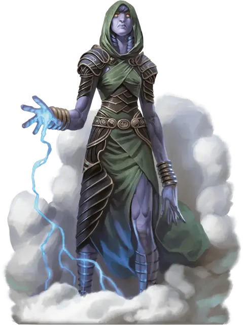

Штормовой великан квинтэссент
Storm Giant Quintessent
Огромный Великан, обычно хаотично-добрый

Класс Доспеха 12
Хиты 230 (20к12 + 100)
Скорость 50 футов, плавая 50 футов, летая 50 футов (парит)
| мод | спас | ||
|---|---|---|---|
| СИЛ | 29 | +9 | +14 |
| ЛОВ | 14 | +2 | +2 |
| ТЕЛ | 20 | +5 | +10 |
| мод | спас | ||
|---|---|---|---|
| ИНТ | 17 | +3 | +3 |
| МДР | 20 | +5 | +10 |
| ХАР | 19 | +4 | +9 |
Навыки Восприятие +10, История +8, Магия +8
Сопротивление урону холод; дробящий, колющий, рубящий от немагических атак
Иммунитет к урону звук, электричество
Чувства истинное зрение 60 футов, пассивное Восприятие 20
Языки Общий, Великаний
Опасность 16 (15000 опыта)
Бонус мастерства +5
Среда обитания Арктика, Горы, Побережье, Под водой, Пустыня
Особенности
Амфибия. Великан может дышать и на суше и в воде.
Легендарное сопротивление (1/день). Если великан проваливает спасбросок, он может вместо этого сделать спасбросок успешным.
Действия
Мультиатака. Великан совершает две атаки Мечом молний или дважды использует Копье ветра.
Меч молний. . Рукопашная атака оружием: +14 к попаданию, досягаемость 15 футов, одна цель. Попадание: 40 (9к6 + 9) урона электричеством.
Копье ветра. . Великан формирует ветер в форме копья и метает его в видимое существо, находящееся в пределах 600 футов. Копье наносит цели 19 (3к6 + 9) урона силовым полем и бьет безошибочно. Копье исчезает после попадания.
Легендарные действия
Великан может совершить 3 легендарных действия, выбрав из предложенных ниже. Можно совершить только одно легендарное действие за раз и только в конце хода другого существа. Великан восполняет потраченные легендарные действия в начале своего хода.
Порыв ветра. . Великан выбирает целью видимое существо, находящееся в пределах 60 футов и создает магический порыв ветра вокруг него. Цель должна преуспеть в спасброске Силы Сл 18 или её оттолкнет на 20 футов в любом горизонтальном направлении по выбору великана.
Удар молнии (стоит 2 действия). . Великан метает молнию в видимое существо, находящееся в пределах 600 футов. Цель должна совершить спасбросок Ловкости Сл 18, получая 22 (4к10) урона звуком при провале или половину этого урона при успехе.
Единство с бурей (стоит 3 действия). . Великан исчезает, растворившись в буре, окружающей его логово. Великан может окончить этот эффект в начале любого своего хода, снова став великаном, появляясь в любом месте внутри своего логова. Растворившись, великан не может совершать ничего кроме действий в логове и его нельзя выбрать целью атак, заклинаний или других эффектов. Великан не может использовать эту особенность вне логова, и не может её использовать если другое существо использует заклинание власть над погодой [control weather] или похожую магию для подавления бури.
Логово
Штормовому великану квинтэссенту не нужен ни замок ни логово в подземелье. Его логово – это обычно уединенная область или известное географическое место, такое как горный пик, большой водопад, удаленный остров, покрытое туманом озеро, красивый коралловый риф или обветренный пустынный утес. В зависимости от окружающей среды, шторм, в котором живет штормовой гигант, может быть метелью, тайфуном, грозой или песчаной бурей.
Действия логова
Штормовой великан квинтэссент может использовать действия в логове в форме гиганта и в виде шторма. По инициативе 20 (проигрыш при ничье), гигант может сделать действие в логове, чтобы вызвать один из следующих эффектов; гигант не может использовать один и тот же эффект два раза подряд:
• Оглушительным грохот. Великан может вызвать удар грома с центром в любой точке своего логова. Любое существо в пределах 20 футов от этой точки должно совершить спасбросок Телосложения Сл 18, иначе стант оглохшим до конца своего следующего хода.
• Туман. Великан создает сферу тумана радиусом 20 футов (или мутную воду внутри воды) с центром в любой точке своего логова. Сфера распространяется огибая углы и видимость в ней сильно затруднена. Туман стоит пока гигант его не развеет (действие не требуется) и его нельзя развеять ветром.
• Буря. Великан создает сильный порыв ветра по линии 60 футов в длину и 10 футов в ширину (или сильного течения в воде), начинающийся из любой точки в его логове. Каждое существо в линии должно совершить спасбросок Силы Сл 18, иначе его оттолкнет на 15 футов в направлении дуновения ветра. Порыв развеивает газы и пары, тушит свечи, факела и другие незащищенные огни в своей области. Защищенные огни, такие как фонарь, имеют шанс 50 процентов погаснуть.
Местные эффекты
Местность, содержащая логово штормового гиганта квинтэссента, изменяется из–за его присутствия, которое создает один или несколько из следующих эффектов:
• Ветра. Сильный ветер дует везде в радиусе 1 мили от логова, что делает невозможным зажечь огонь, если только область, где зажигается огонь, не защищена от ветра.
• Осадки. Дождь, снег или дуновения пыли или песка (что подходит к местности) всегда идет в радиусе 1 мили от логова. Дождь заставляет реки и ручьи выходить из берегов; снег, пыль или песок наметает сильные сугробы или дюны.
• Гроза. Вспышки молний и раскаты грома не прекращаются ни днем ни ночью в радиусе 5 миль от логова.
Если гигант погибает, то молнии, гром и сильные ветра прекращаются незамедлительно. Дождь, снег и пыльный ветер постепенно затухают в течение 1к8 дней.
Описание
Чтобы предвосхитить неминуемое, некоторые штормовые гиганты, приближающиеся к концу своей жизни, ищут путь избежать смерти. Они проникают в глубины своей могущественной связи со стихиями и растворяют себя в природе, буквально превращаясь в полубессознательные шторма. Метель, которая яростно и бесконечно вьет вокруг горного пика, водоворот, вращающийся вокруг отдаленного острова,или гроза, которая воет беспрерывно вдоль рваного берега, может на самом деле являться неумирающей формой штормового гиганта, цепляющегося за существование.
Штормовой гигант квинтэссент отбрасывает свои доспехи и оружие, но получает способность формировать оружие просто из воздуха.Когда гиганту они не нужны или когда он умирает,его стихийное оружие исчезает.
Штормовой гигант квинтэссент может в любой момент превратиться в свою настоящую гигантскую форму. Эта перемена временная,но может поддерживаться достаточно долго, чтобы гигант мог поговорить со смертным, выполнить простую задачу или защитить жилище от агрессоров.